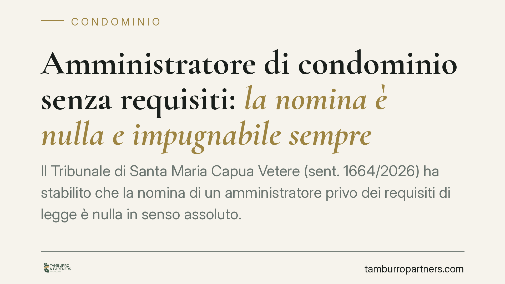

Amministratore di condominio senza requisiti: la nomina è nulla e impugnabile sempre
Il Tribunale di Santa Maria Capua Vetere (sent. 1664/2026) ha stabilito che la nomina di un amministratore privo dei requisiti di legge è nulla in senso assoluto. La conseguenza è rilevante: la delibera può essere contestata da chiunque vi abbia interesse, senza il termine di trenta giorni previsto per le normali impugnazioni condominiali.

Il caso
Un condominio nomina il proprio amministratore. In un momento successivo emerge che il soggetto incaricato non possiede i requisiti professionali richiesti dalla legge. Ci si chiede, allora, entro quale termine i condòmini possano reagire e con quali strumenti.
Il Tribunale di Santa Maria Capua Vetere, con la sentenza n. 1664/2026, ha chiarito il punto: la nomina di un amministratore privo dei requisiti previsti dall'art. 71-bis delle disposizioni di attuazione del codice civile non è semplicemente annullabile, ma radicalmente nulla. Una distinzione tutt'altro che formale, come vedremo.
Inquadramento normativo
L'art. 71-bis disp. att. c.c. elenca i requisiti per svolgere l'incarico di amministratore di condominio. Tra questi: il godimento dei diritti civili, l'assenza di condanne per determinati reati, l'assenza di protesti, il diploma di scuola secondaria di secondo grado e la frequenza di un corso di formazione iniziale con aggiornamento periodico. La stessa norma stabilisce che chi perde uno di questi requisiti cessa dall'incarico.
Decisivo è il meccanismo di reazione. L'art. 1137 c.c. disciplina l'impugnazione delle delibere assembleari fissando, per le delibere annullabili, un termine di decadenza di trenta giorni. Le delibere nulle, invece, sono sottratte a questo termine: possono essere contestate da chiunque vi abbia interesse, senza limiti temporali.
La questione, quindi, è di qualificazione: la nomina dell'amministratore senza requisiti rientra tra le delibere annullabili o tra quelle nulle?
La decisione: nullità assoluta
Il Tribunale opta per la nullità. Il ragionamento muove dalla natura dei requisiti dell'art. 71-bis: non sono condizioni di mera opportunità, ma presupposti di legittimità posti a tutela di un interesse generale alla corretta gestione del condominio.
Una delibera che nomina un soggetto privo di tali presupposti ha, in sostanza, un oggetto illecito o impossibile: attribuisce una funzione a chi la legge esclude in radice dal poterla ricoprire. Da qui la conseguenza: la nomina è nulla, la nullità è rilevabile anche d'ufficio e l'azione non è soggetta al termine di trenta giorni.
In concreto, un condòmino che scopra dopo mesi — o dopo anni — che l'amministratore non era in possesso dei requisiti può comunque far valere l'invalidità della nomina.
Implicazioni pratiche
Per i condòmini si apre uno spazio di tutela più ampio. Non si è più vincolati alla finestra ristretta dei trenta giorni dalla delibera o dalla comunicazione del verbale.
Per l'amministratore la pronuncia impone rigore sul fronte dei requisiti. Una nomina viziata non si consolida con il passare del tempo: resta esposta a contestazione a tempo indeterminato, con ricadute sulla validità degli atti di gestione compiuti.
Per l'assemblea emerge la necessità di una verifica preventiva. Nominare senza accertare i requisiti significa esporre l'ente a un'incertezza duratura e a possibili contenziosi sulla legittimità degli atti.
Va segnalato che la giurisprudenza non è del tutto uniforme sul tema: altre pronunce hanno qualificato il vizio in termini di annullabilità. La sentenza in commento, pur autorevole, è una decisione di merito e non fissa un principio definitivo. Consigliamo quindi di non trarne automatismi e di valutare ogni situazione nel suo contesto.
Cosa fare in concreto
- Verificate i requisiti prima della nomina. Richiedete all'amministratore la documentazione che attesta il possesso dei requisiti dell'art. 71-bis, compreso l'attestato di formazione aggiornata.
- Conservate la documentazione. Allegate al verbale assembleare o al fascicolo del condominio le autocertificazioni e gli attestati acquisiti.
- Monitorate la permanenza dei requisiti. La perdita anche di uno solo di essi determina la cessazione dall'incarico: non è un controllo da fare una volta sola.
- Se avete dubbi su una nomina passata, fate valutare la posizione. La possibile nullità consente di agire anche oltre i trenta giorni, ma la strategia va calibrata caso per caso.
- Gestite con attenzione gli atti compiuti. L'eventuale invalidità della nomina può riflettersi sulla validità dei contratti e dei pagamenti disposti: una ricognizione tempestiva riduce i rischi.
Disclaimer
Contributo informativo a cura di Tamburro & Partners - Avv. Giuseppe Tamburro. Non costituisce parere legale.
Ogni condominio ha una storia a sé.
Se gestisci un'amministrazione e vuoi un confronto su una specifica questione condominiale, scrivi allo studio. Ti rispondiamo entro un giorno lavorativo.